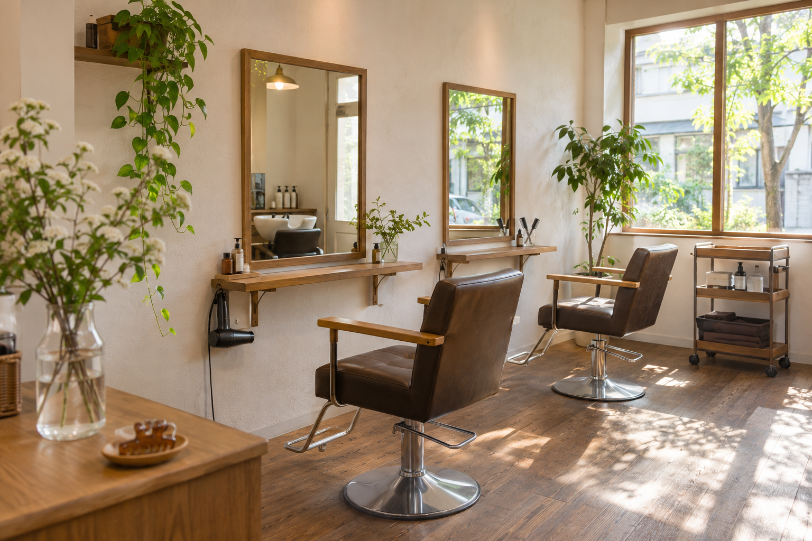

ひなた美容室
髪に手間取る朝を
変えたいあなたへ
髪が思うようにまとまらず、出かける前に何度も時計を見る。
そんな朝が続いているなら、いつもの支度の話を聞かせてください。
家で使う道具と、朝にかけられる時間から、髪型を考える。
目指すのは、翌朝、ご自分の手でも整えやすい髪です。

直しているうちに
出かける時間になる
美容室から帰った日は気に入っていたのに、翌朝、鏡の前ではうまくいかない。
毛先を直しているうちに出かける時間が近づき、結局、いつもと同じ結び方になる。
本当は、髪を下ろして出かけたかった。
でも、これ以上は時間をかけられない。
お店と家では、使う道具も、髪にかけられる手間も違います。毎朝アイロンを使う前提の髪型なら、ドライヤーだけの朝には整えにくいこともあります。
だから、仕上げに「毎朝セットしてください」とお伝えするだけでは足りないと考えています。
どこで手間取るのか。何をしてもうまくいかないのか。その困りごとを、施術を決める手がかりにします。
毎朝できることを
髪型の条件にします
- 仕事中にまとめる必要があるなら、結べる長さを残す。
- ドライヤーだけで整えたいなら、毎朝アイロンを使う前提の形にはしない。
- 生え癖で分かれやすいところは、短く切る前に、乾いた状態の収まりも確かめる。
見せていただいた写真の、好きな雰囲気は大切にします。そのうえで、家で同じように仕上げるには何が必要かをお話しします。毎朝続けるのが難しければ、長さや形を調整する方法をご提案します。
カラーやパーマも、見た目の変化と、その後に必要なお手入れを合わせて検討します。
髪型を変えたことで、朝のやることが増えすぎないように。
好きな髪を、いつもの暮らしの中で楽しめるように。
そのための判断を、一つずつ重ねる美容室でありたいと思っています。
いつも困るところから
聞かせてください
「前髪が分かれてしまう」
「片側だけ、ふくらむ」
「仕事中は結びたいけれど、下ろしたときも楽しみたい」
髪型の名前で説明できなくても大丈夫です。
気になる場所と、ふだんどう整えているかを教えてください。変えたくない長さや、気に入っているところもお聞きします。
髪の生える向き、毛量、乾いたときの収まりを確かめます。長さを変えるのか、重さを残すのか、まず乾かし方を変えて試すのか。何を見て、なぜその方法をすすめるのかまで言葉にします。
写真があれば、どの部分が好きなのかを教えてください。なくてもかまいません。
必要な施術と仕上がりの方向、総額をご確認いただいてから進めます。
仕上げの一部分を
あなたの手で
美容師が整える様子を見ただけでは、家で同じように手を動かすのは難しいものです。
仕上げには、ふだん使う道具に合わせて、乾かす順番や風を当てる方向を確認します。ご希望の方には、前髪など気になる一部分を、ご自分でも乾かして試していただきます。
手を動かしてみると、説明を聞いていたときには分からなかったことも見えてきます。ドライヤーを持ち替えにくい、どちらへ乾かすのか迷う。そんなところは、その場で手順を見直します。
たくさんのコツを一度に覚えるより、明日の朝、まず試すことを一つ。
見て確かめる方も、ご自分で試す方も。翌朝、まず何をするかを確認してから、仕上げを終えます。
ご来店までの流れ
希望日時を知らせる
予約フォームから希望日時とご希望のメニューをお送りください。メニューが決まっていない場合は、気になることやご希望を一言添えてください。
日時を確認する
空き状況を確認し、日時と来店案内をご返信します。お店からの確定連絡をもって予約完了となります。
髪型を相談する
ご来店後、好みやいつものお手入れについて伺い、仕上がりの方向を確認してから施術します。
メニューが決まっていなくても大丈夫です。
よくあるご質問
髪型を決めていなくても予約できますか？
はい。「伸ばしていきたい」「毛先を整えたい」など、大まかな希望からご相談いただけます。
写真を持っていく必要はありますか？
必須ではありません。気になる髪型の写真があれば、好みを共有する手がかりとして拝見します。
料金が変わることはありますか？
カットは、髪の長さによる追加料金はありません。カラーやパーマは、髪の長さや施術内容によって追加料金がかかる場合があります。メニューを追加する場合も含め、施術前に内容と総額をご案内し、ご確認いただいてから進めます。
予約を変更したいときはどうすればいいですか？
予約確定のご案内に記載した連絡先へお知らせください。変更・キャンセルの条件は、予約確定前にご案内します。
髪を整えたら
今日の予定へ
鏡の前で、何から直せばいいのか迷っていた朝に。
まず手をかける場所が、一つ分かっている。
ひなた美容室が目指すのは、そんな小さな変化です。
髪のことばかり気にしていた気持ちを、その日の仕事や、会いたい人との時間へ向けられるように。
ご予約の際は、希望日時とご希望のメニューをお知らせください。
メニューが決まっていなければ、「朝、ここがうまくいかない」と一言添えていただくだけで大丈夫です。